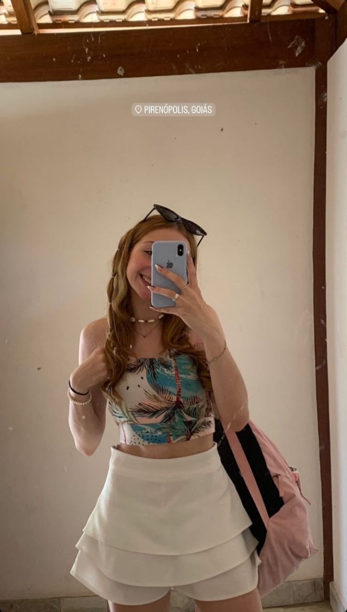

Rebeca Schettine
Seu sorriso é o meu sol, iluminando todos os meus dias.
Explorando seu sorriso
No suave traçado dos seus lábios repousa o sorriso que encanta o mundo e ilumina até os dias mais cinzentos. É como se cada curva, delicadamente esculpida pela doçura do seu ser, fosse um convite ao encantamento, um convite a desvendar os mistérios da felicidade. Seu sorriso é uma obra-prima da natureza, uma sinfonia de alegria que ecoa nos corações daqueles que têm a honra de testemunhar sua luz.
Personalidade e beleza

É uma menina educada, cuja ternura e graciosidade se manifestam em cada gesto, em cada palavra que pronuncia. Seu cuidado consigo mesma reflete não apenas um amor pela própria essência, mas também um respeito pela beleza que habita dentro de si. Sua presença é como um bálsamo para a alma, trazendo paz e serenidade aos corações que têm o privilégio de compartilhar seu espaço.
Seu jeito atencioso e acolhedor cria um ambiente de harmonia e conforto, onde todos se sentem bem-vindos e apreciados. Ela entende que a verdadeira beleza não está apenas na aparência física, mas sim na forma como tratamos os outros, na empatia que demonstramos e no amor que compartilhamos.
O jeito que ela enxerga o mundo
Ela enxerga o mundo com olhos cheios de ternura, onde cada detalhe ganha significado e cada momento é uma oportunidade para celebrar a vida. Sua visão é colorida pela beleza das pequenas coisas, e sua alma é tocada pela simplicidade dos gestos e pela profundidade das emoções. Para ela, o mundo é um lugar repleto de possibilidades, onde o amor e a compaixão são as forças que guiam seus passos. Em seu olhar, reside a esperança de um amanhã melhor, onde a bondade prevalece e a felicidade é compartilhada por todos que cruzam seu caminho.
Olha esse rostinho lindo
Seu rosto é uma obra divina esculpida com traços de delicadeza e harmonia, como se cada curva e cada linha tivessem sido meticulosamente desenhadas pelas mãos do Criador. Cada detalhe, desde o suave contorno dos seus lábios até o brilho radiante dos seus olhos, é um reflexo da beleza celestial que habita em você.
Curiosidades
Ela é uma estrela brilhante destinada a iluminar o mundo da medicina com sua dedicação, compaixão e conhecimento. Cada passo que ela dá na jornada rumo à sua carreira é impulsionado por uma paixão genuína pelo bem-estar dos outros e por um desejo ardente de fazer a diferença.
Ela será mais do que uma médica; será um farol de esperança para seus pacientes, um exemplo de integridade e excelência para seus colegas, e uma inspiração para todos ao seu redor. Seu trabalho não apenas curará corpos, mas também acalmará almas e trará conforto a corações aflitos.
Ela é de se encantar, mas ela é só minha sealworld.com